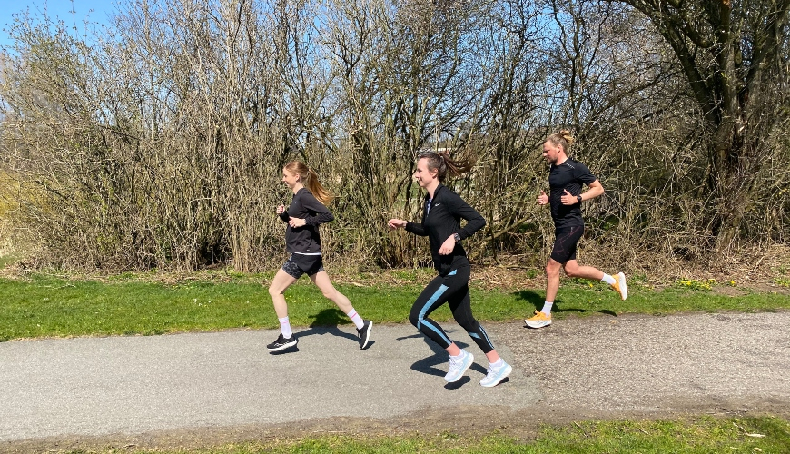

This is the ultimate guide to constantly challenge the status quo of your running workouts and become a better runner.
The article is primarily aimed at the serious runner, who wants to run for longer and run faster. The article will provide you with useful tips on how to structure your running workouts in order to always improve as a runner.
The keyword is progression.
Whether you are a casual jogger or a relatively new runner who has reached a point of standstill, you will also be able to find inspiration from the article. The most crucial ingredient in every successful running program is the ability to make progress in your workout...
But what even is progression, and how can you make progress in your workout? When you have read this post, I hope that you will become a true “progression master” and that you will feel comfortable with incorporating it into your running workouts.
Progression involves the process of changing and reaching the next stage of development. You make progress when you constantly increase the training load in your training program.
If you want to become a better runner, you have to constantly increase the training load in order to stimulate your body to become stronger. If you do not increase your overall training load, your body will become 'lazy' and the improvements will be fewer and fewer until there ultimately will be no more improvements. If you wish to evolve as a runner over several years, you have to incorporate progression into your long-term strategy. In other words, you have to increase the training load for each workout to become better year after year.
It is easy and uncomplicated to increase the training load - simply run more miles in a higher tempo! It is much more complex to increase the training load in a way that will allow you to progress and simultaneously prevent injuries. Ideally, you should always be balancing on the line of getting an injury - without getting injured.
This is the line you should challenge and find if you want to reach your full potential. When you want to increase your training load, you need to approach it in a structured way. Some running coaches and various experts have throughout the years stipulated that the training load should only be increased by max 10 % every week. However, reality is different, since this rule is rarely being observed. Therefore, you should only use this rule as a guideline and try not to get bogged down in it.
You can increase the training load by running more miles, increasing your pace, or both. Normally, I would recommend you try and focus on either increasing your training load (i.e. your mileage) or increasing the pace. My experience tells me that the risks of injuries will surge exponentially if you increase both the pace and training load in the same period. When you increase your training load, it is important to give your body enough time to recover.

The renowned American running coach, Jack Daniels, believes that the body needs roughly 6 weeks to recover and adapt to the new training load. It is important, however, to point out that there is no scientific evidence to back up this statement. Nevertheless, the point is that, if you rush the progression, you will risk injuries because the tendons and joints will be too slow to adapt to the new (increased) training load. Conversely, if your workouts have reached a standstill and you are no longer making progress, you should ask yourself this simple question;
"Have I increased my overall training load recently?" If the answer is no, then you have the answer to why you are not making any progress...
A brilliant way to structure your progression is to think in blocks of weeks, months (or from period to period, if you prefer period scheduling), and entire work-out blocks. Use the former two blocks to get the structure of your progression in a single training program. Use the latter to compare the different training programs.
As a result, your progression can happen on a week to week basis, from a month to month basis (or period to period), and from training program to training program. Allow me to illustrate my point with three examples:
NB. This is not my recommended workout plan - the following are merely examples. You will find my actual recommendation later in the article...
| WEEK | Training Day no 1 | Training Day no 2 | Training Day no 3 |
|---|---|---|---|
| 1 | 40 MIN. RUNNING | 50 MIN. RUNNING | 40 MIN. RUNNING |
| 2 | 40 MIN. RUNNING | 50 MIN. RUNNING | 40 MIN. RUNNING |
| 3 | 40 MIN. RUNNING | 50 MIN. RUNNING | 40 MIN. RUNNING |
| 4 | 60 MIN. RUNNING | 60 MIN. RUNNING | 90 MIN. RUNNING |
In the first 3 weeks, there is no progression in the training. In week 1 to 3, the runner runs a total of 130 min, while all the progression has been placed in the final week. In this week, the person runs 210 min; i.e. an increase of around 60%. This is not ideal. It would be better to aim for a steadier progression every week.
| WEEK | Training Day no 1 | Training Day no 2 | Training Day no 3 |
|---|---|---|---|
| 5 | 40 MIN. RUNNING | 50 MIN. RUNNING | 40 MIN. RUNNING |
| 6 | 45 MIN. RUNNING | 50 MIN. RUNNING | 45 MIN. RUNNING |
| 7 | 45 MIN. RUNNING | 60 MIN. RUNNING | 45 MIN. RUNNING |
| 8 | 50 MIN. RUNNING | 70 MIN. RUNNING | 50 MIN. RUNNING |
Overall, our training load for this month will be 740 min and thereby an increase of 25%, compared to the previous month. Notice how there is also a weekly progression in this 3rd month.
When you have grasped the basic principles of progression, you should be able to break free from some of the fixed patterns described in this blogpost. You should be able to change the training load and training intensity to give more variety to your training. Furthermore, you should be able to periodise your training.
Good luck with your training!